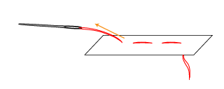

If you are right handed, stitch from right to left.
If you are left handed, stitch from left to right.
1. Cut Thread
Cut about 2 feet of thread, which will be 1 foot long when needle is double threaded.
2. Thread Needle
Cut off any excess fuzz from end of thread so that thread doesn't get caught on anything. Push through eye of needle.
3. Double Threading
Pull thread through needle until both ends of the thread are even.
4. Knot End of Thread
Make a loop with thread ends closer to you and pull thread ends from back of loop, towards you. Repeat. When you make your first stitch, this knot should stop the thread from going all the way through the fabric.
NOW YOU ARE READY TO START SEWING!
* SOME STITCHES *
Running Stitch (also called Basic Stitch, Straight Stitch)
This is the basic sewing stitch. To make even stitches, follow the dotted line on the embroidery hoop. Conductive thread can become tangled easily, so make sure each stitch is even and not too loose or tight. This video is recommended for tips for sewing conductive thread.
figure>
PUT IMAGE OF EDGE
The conductive thread at the FLORA, neopixel, button tab or glove patch must be secure, or there will be a break in the circuit. It helps to sew 3 times at these points on the embroidery hoop.
Basting

This stitch is very loose and large, and doesn't even need a knot at either end. It is used to keep fabric together temporarily.
Slip Stitch
This is a stitch used to stitch the fabric button cover down to the embroidery hoop. After using the fold of the cover as a pathway for the needle, the needle is then brought outside of the cover to stitch into the embroidery hoop fabric. Fold, and hoop, fold and hoop, fold and hoop, etc. is repeated to stitch the cover down.